场景教程
实时同传：听讲话，输出译声
先选择持续同传或 Mini，再选择已保存的译声模型或 API 连接。本机克隆还需检查参考音，需要转换时明确点击准备。
你能得到什么
组合识别、翻译与合成，显示字幕并播放译声。真正低延迟的同传仍需按模型和设备验证。
开始前准备
- 分别完成转录、文本翻译和目标语言合成试音；准备输出耳机，避免播放回灌录音。
- 模型目录、可选 Runtime 和服务连接先在配置引导页保存。工作台明确选择译声运行方式及已配置项；各来源的参数独立保留。克隆需合格参考音。
- 当前 Windows 包中的 FireRedTTS3 Instruct 使用 CPU，不提供此引擎的 CUDA 组件。配套组件支持时可试「边生成边播放 · 实验」；工作台自动播报。其他完整 WAV 路线仍等每条请求全部生成。流式播放是否提前出声，取决于模型或服务能否提前交付音频；持续实时性能尚未验收。
- Index、VoxCPM原生参考音通常为1–60秒；FireRed为1–10.24秒。使用清晰单人讲话，按模型要求填写实际原文。现有Rust读取器会按需规范化兼容格式与采样率，原文件保留；不要求先把可读取的float32 WAV改成PCM16。
图中部分配置为较早界面。新版模型目录和服务连接统一在配置引导页保存；对应工作台位置请选择已配置条目。参考音、语言、情绪及播放操作仍可按图理解。
逐步操作
- 01
检查三条链路并选择语言
先按转录、模型配置和克隆指南分别试用。在「配置引导 → 模型与参数 → 本地模型库」保存识别与声音模型，翻译服务在引导的 API 配置中保存。打开顶部「同传工作台」，直接选择已配置识别模型与翻译服务，设置源语言、主目标语言和需要的额外字幕语言。本地分段识别可选兼容的 SenseVoice · ONNX 或 Fun-ASR-Nano 登记条目，无需重复填写目录。本次任务使用工作台当前选中的识别与译声模型，可以不同于主界面；开始前核对名称和规格。先只用一个目标语言，确认连续流程后再增加。
在「同传识别模型 / 服务」中，选一个本地模型就使用本机识别；选「已保存实时 API」则仅为本次同传使用该服务，音频会发送到服务端。选「沿用录音识别方式」保留主录音设置；主录音使用本地识别时，沿用已保存的同传模型。API 不可选时，先到配置引导保存服务，再在录音设置完成实时识别配置。持续同传与 Mini 使用同一选择，均不会把本次的识别方式和语言写回主录音设置。
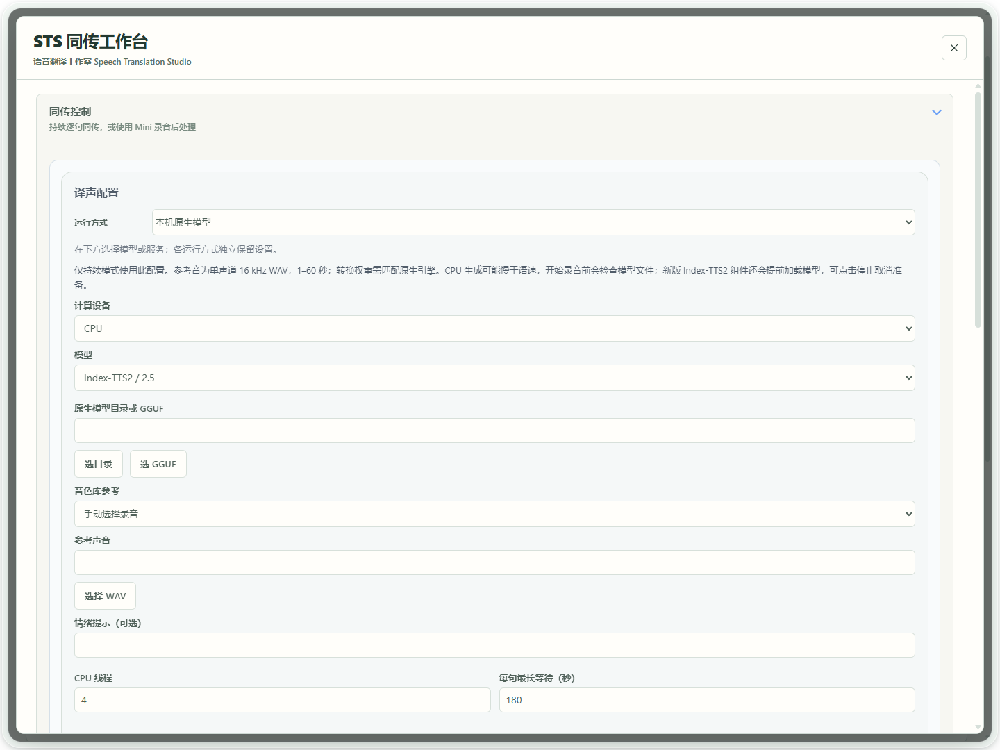
真实软件界面 · 点击放大；图中示例数据不代表你的结果 - 1选择译声运行方式。
- 02
选择已经试听成功的译声
在「译声配置」选择已经试听成功的运行方式，再选择已配置的模型、模型服务或译声 API。模型路径、可选 VoxCPM2 Runtime、服务地址和密钥统一在配置引导页保存，工作台无需再次填写。参考音、音色、情绪和播放方式按当前任务调整。来源切换不会复制另一来源的密钥和参考；模型服务须已启动且协议匹配。
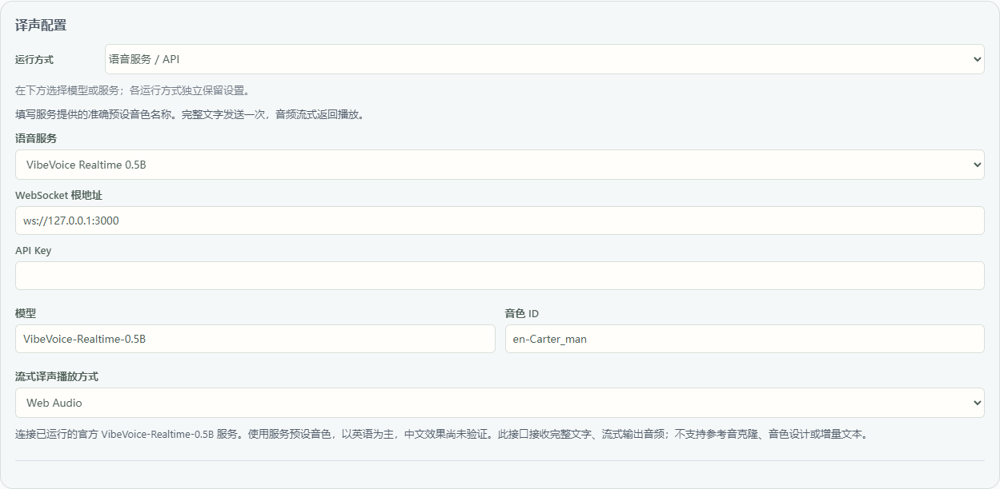
真实软件界面 · 点击放大；图中示例数据不代表你的结果 - 1选择语音服务或 API。
- 2选择与你的服务匹配的提供商。
- 3填写此服务可用的音色。
- 03
先决定：持续同传，还是录完再处理的 Mini
边讲话边翻译和播报，请用顶部「持续同传（实验）」，结束点「停止同传」。Mini是另一种方式：点「打开独立悬浮 Mini」，点击悬浮控件开始录音，再点一次结束录音；保存后才翻译、生成译声和播放，不是连续实时播报。先选一种方式试用。
Mini正在生成时，点工作台「停止」取消本次处理，并等待收尾；等待中不能再开始录音。「退出 Mini」也会先停止并等待，再关闭悬浮控件。已完成音频播放时点「停止」，会停止播放并保留回听入口。
生成完成或部分成功时，可在译声卡回听；展开「文件详情」查看保存位置或复制路径。失败或取消时保留已有文字，不播放旧任务音频；可展开「查看原因」检查提示。
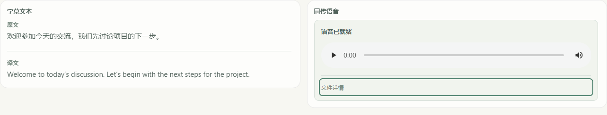
当前界面操作示例 · 文字与音频状态来自受控测试，不代表真实模型生成效果。点击放大。 - 1字幕卡专注原文与译文。
- 2唯一播放器可重听译声，与自动播放使用同一控件。
- 3展开文件详情，查看保存位置或复制路径。
- 04
本机原生模式：选已配置模型，再检查参考音
在「译声配置」选择「本机原生模型」，从已登记列表选与你的权重相符的模型，选择参考录音并填写需要的参考原文，再点「检查模型」。这一步检查文件和参考音，不生成语音。需要准备原生权重时按提示处理；开始同传不会自动转换大模型。新增或修改路径请点「管理本地模型」返回配置引导页，完成引导保存后再选用。
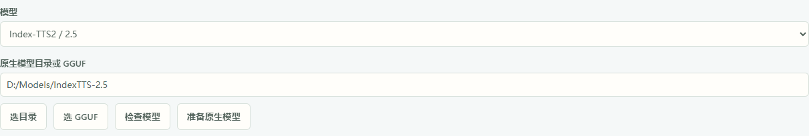
当前界面配置示例 · 图中路径为示例，未检查、转换或加载模型。点击放大。 - 1选与原始权重一致的模型家族。
- 2新版在此选择已登记模型；准备后选用 Native 条目。
- 3先检查模型，不生成语音。
- 4需要转换时明确点击准备；原文件保留。
- 05
需要转换时，再明确点击「准备原生模型」
Index-TTS2／2.5或VoxCPM2提示需准备时，先在声音面板选该登记条目，点「准备原生模型」并等待完成。过程在所选模型目录内增加必要文件，保留原文件；转换期间不能开始录音。Index完成后新增并选用 Native 登记条目，指向模型目录内的 .boundless-flow/native；VoxCPM2可能保持原目录。同传从同一个模型库选择已经准备并试音成功的条目，不再复制或粘贴路径，也不需要再转换一份。参考音与原文按本次任务选择并检查。若失败，请按具体文件或格式提示处理；原登记与原文件保留。FireRed原始目录不走Index转换。
当前界面配置示例 · 图中路径为示例，未检查、转换或加载模型。点击放大。 - 1选与原始权重一致的模型家族。
- 2新版在此选择已登记模型；准备后选用 Native 条目。
- 3先检查模型，不生成语音。
- 4需要转换时明确点击准备；原文件保留。
- 06
用 FireRed 时，选原始模型、CPU 与自己的参考音
先在配置引导页登记含 fireredtts3_instruct、redae、text_tokenizer 的 FireRed 原始根目录并保存。工作台选择「本机原生模型」和该 FireRedTTS3 登记条目，计算设备选择 CPU；当前 Windows 包不提供 FireRed CUDA 组件。参考 WAV 须为1–10.24秒，建议3–5秒清晰单人讲话，并填写实际录音原文。先在语音工具完成短试音，同传选择同一登记模型与已经检查的参考音。此路线不需要另开模型服务，也不执行 Index 权重转换。保留完整应用目录及匹配的运行组件，不只移动主程序；「准备原生模型」不能修复缺组件或缺权重。参考音或原文改动后重新检查和短试音。
旧截图用于说明控件位置，图中的 CUDA 是较早参数；当前 Windows 安装包使用 FireRed 时请选择 CPU。需要 NVIDIA GPU 时，请选择已支持的 Index-TTS2、Qwen3-TTS 或 VoxCPM2，并先通过组件与设备检查。
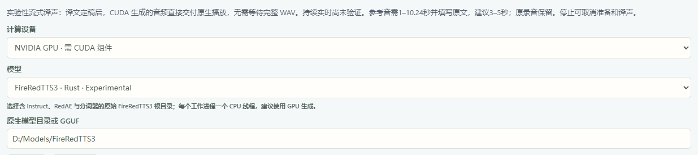
软件配置示例 · 未启动模型或音频。点击放大。 - 1参考音须1–10.24秒并填写原文；建议3–5秒。
- 2旧图此处显示 CUDA；当前 Windows 包请选择 CPU。
- 3选择 FireRedTTS3。
- 4新版选择在引导页登记的 FireRed 模型。
- 07
开启生成中播放；工作台自动播报
勾选「边生成边播放 · 实验」。当前同传工作台自动播放译声，没有单独需要你开启的自动播报开关；先确认系统默认输出、耳机和音量。这条路线在每段完整译文定稿后开始生成，生成中的 PCM 直接交付原生播放；它不接受任意追加文本。开启后「译文短句提前合成」会隐藏，两个选项不叠加。需要整段生成后再播放时，停止同传后取消该勾选。若提示组件只支持完整 WAV，请使用包含新版 FireRed 组件的完整应用目录。
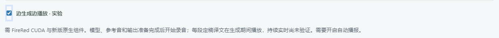
软件配置示例 · 未启动模型或音频。点击放大。 - 1开启“边生成边播放 · 实验”。
- 2工作台自动播放译声；先确认默认输出与音量。
- 08
先准备，再「持续同传（实验）」
使用本机译声时，先在声音工作台完成文件与当前参考检查，再用目标语言短文本生成并试听。使用「语音服务／API」时，选已保存连接和可用音色，用目标语言短句试音，无需本地 TTS 目录与参考音；仅「提前加载模型」不等于实际推理预热。新版同传面板顶部固定显示「持续同传（实验）」与「停止同传」。当前工作台自动播放译声。确认系统默认输出、耳机和音量后开始，等待支持的模型加载与输出准备完成再讲话，准备期间可「停止同传」取消。加载单列为准备时间；首次参考处理、首轮实际推理及运行中重载仍分别记录，不假定已经完成热身。 FireRed支持预置参考的组件可先在声音工作台选「预置模型与参考音」，但仍要完成短句试听。只有模型预加载的旧组件，首句仍需处理参考音；不要把预置完成当作已经生成可播放语音。
真实软件界面 · 点击放大；图中示例数据不代表你的结果 - 1开始突出显示；停止始终在这里。
- 2查看状态；关闭面板不等于停止同传。
- 09
短句试用，观察 runtime 首音
先说几句短话，查看原文、译文、合成和积压状态。重点看「源语音起点 → 首音」「源语音结束 → 首音」及 p50／p95；缺失计时显示「—」，不是零。界面计时是软件估计，不等于扬声器物理出声测量。
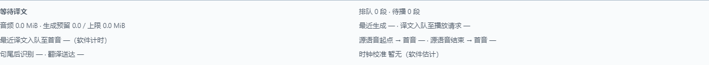
真实软件界面 · 点击放大；图中示例数据不代表你的结果 - 1讲话起点和句尾到首音分别计时。
- 2查看句尾后识别与翻译送达耗时。
- 3校准缺失时，不显示估算值。
- 10
按能力试流式或短句提前合成
CosyVoice／Fish 服务可试「音频到达即播放」，先检查表单对 PCM／WAV 的要求。原生「译文短句提前合成 · 实验」默认关闭；每次请求仍生成完整 WAV，可能改变停顿或总耗时。先试听后选择，不能把播放方式称为真正增量模型。
先停止同传。在原生译声配置中勾选「译文短句提前合成 · 实验」，下方会出现「译声节奏」。默认「低延时」，优先更早开始播报，短句之间仍可能等待。「平稳接续」尝试让前后段衔接更平稳，但可能增加起声等待，不保证无停顿。此选择仅用于已通过语言检查的译文短句输出。启用 FireRed 的「边生成边播放」后，此选择会隐藏。你的选择会保存。
下图为较早的提前合成选项位置示意。新版勾选后，下方还会显示「译声节奏」。
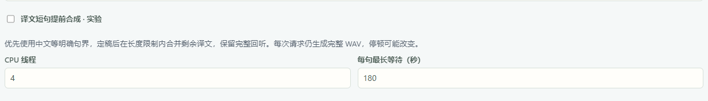
真实软件界面 · 点击放大；图中示例数据不代表你的结果 - 1在本机原生模型配置中开启短句提前合成；默认关闭。
- 2定稿后有界合并剩余译文；每次请求仍生成完整 WAV。试听检查停顿和音质。
- 11
结束请点击「停止同传」，保留本轮结果
结束任务请点击「停止同传」，译声播放会立即停止；录音收尾和记录保存仍可能继续。看到「正在保存同传记录」时，请先等待。关闭或隐藏同传面板可能仍让任务继续运行。保留本轮统计、失败与慢段；确认保存完成后再开始新任务，不在运行中移动模型或切换路径。
真实软件界面 · 点击放大；图中示例数据不代表你的结果 - 1开始突出显示；停止始终在这里。
- 2查看状态；关闭面板不等于停止同传。
- 12
只有字幕没声音：先停止，再做一句试音
点顶部「停止同传」，再打开「语音工具 → 模型配置」，选择同一登记模型、参考音和原文。「检查模型」通过后，在「合成文本」填一句目标语言，点「生成克隆语音」。图中1是检查／生成操作区，2提醒文件检查不等于已生成。没有音频就按状态处理明确的文件、运行组件或参考音问题；出现音频后用播放器重听，仍无声才检查系统默认输出、静音、耳机和音量。听到正确声音后，同传选择同一已配置模型与参考音，检查后重新开始，无需重复填写目录或 Runtime。工作台自动播放，不需要另开自动播报开关。
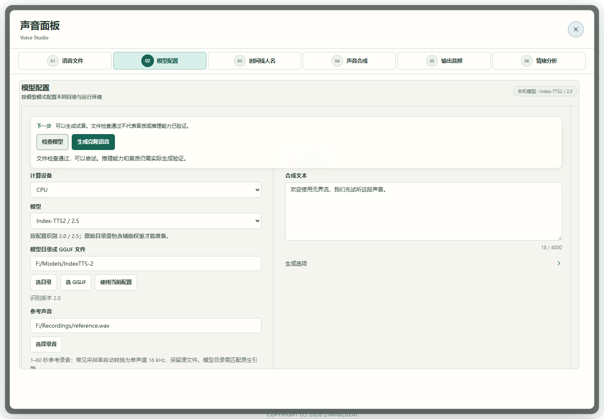
真实软件界面 · 点击放大；图中示例数据不代表你的结果 - 1检查和生成固定在编辑区上方。
- 2文件检查通过后仍需实际试听。


同传识别模型与服务选择

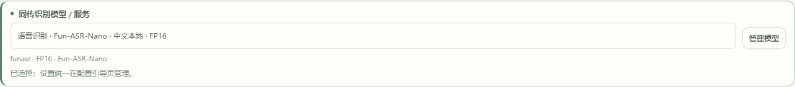
CosyVoice 配置一次，再选账户音色
本节预览下一更新中的 CosyVoice 连接流程。当前已交付的 Windows r475 安装包尚未包含此新入口，请使用包含该入口的更新版。
- 打开配置引导 → API 配置，启用 Alibaba Cloud · CosyVoice。这张卡只配置语音合成。填写自己业务空间和地域对应的完整
wss://地址，路径须以/api-ws/v1/inference结尾；将地址里的 WorkspaceId 占位符替换为真实值，再填写对应 API Key 和 TTS 模型。完成引导以保存。 - 返回同传「译声配置 → 语音服务／API」，明确选择「配置引导 · 阿里云 · CosyVoice · 边译边播」，核对模型和主机名。不会自动选择地域、复制 Aliyun 文本连接或 Qwen Audio 3.1 连接，也不会自动开始同传。
- 填写与模型匹配的音色 ID，或按下方步骤选择已有音色。首次选择此来源时音色为空，需要你自己选择。语速范围为
0.5–2；情感写在服务支持的指令中，没有独立情绪参数。手动自定义连接和其他来源的使用草稿继续独立保留。
请从阿里云控制台取得自己的完整地址。地址格式见官方WebSocket 接入指南；模型、音色和指令能力见语音合成模型说明。账户权限、地域、模型和音色需要匹配。
先找已有音色，再按需创建
- 在同传点击「克隆 / 设计 / 选择音色」。打开后默认显示「已有音色」，上方显示保存的主机和模型，无需再次输入连接。点击「查询云端音色」才查询账号；打开面板不会自动查询、上传或创建。
- 需要新音色时，选择「文字设计」或「参考音克隆」，按页面要求填写，再点击明确的创建按钮。
cosyvoice-v2可查询、使用已有音色和参考音克隆，文字设计按钮不可用并显示原因。cosyvoice-v3.5-plus、cosyvoice-v3.5-flash需要已经创建的复刻或设计音色，没有预置音色。 - 查询后先「检查状态」，再点「生成试听」。完整听完试听后，才能点「用于同传」。返回同传时只更换音色 ID，原来选择的配置引导连接、语气指令、语速和播放方式保留，自定义连接草稿也保留。
| 模型 | 怎样填写语气与情感提示 |
|---|---|
| cosyvoice-v3.5-plus / v3.5-flash | 复刻、设计音色支持自然语言指令。 |
| cosyvoice-v3-plus | 预置音色按音色表指定格式填写；复刻、设计音色不支持指令。 |
| cosyvoice-v3-flash | 预置音色按指定格式填写；复刻、设计音色支持自然语言指令。 |
| cosyvoice-v2 | 不支持语气指令，保留的旧指令需要先清空。 |
指令最多 100 个加权字符，汉字计 2，其余字符计 1。例如，50 个汉字已达到上限。音色必须匹配创建时的目标模型；更换模型后请重新核对音色。服务拒绝某种指令时，草稿仍保留，按音色说明修改后再试。
查询、创建和试听会访问选定服务，创建与试听可能计费。点取消或更改保存的连接后，要等待原请求结束，控件才会解锁或换用新连接。若创建结果尚未确认，先用原连接查询音色，勿重复创建；软件不会自动重试创建。连接被停用或移除时，不会改用另一来源。
持续模式可逐步送入译文并接收音频；Mini 仍须先停止本段录音，再等待翻译和完整音频生成后播放。开会前，请用自己的账号、目标语言和输出设备做短试音。

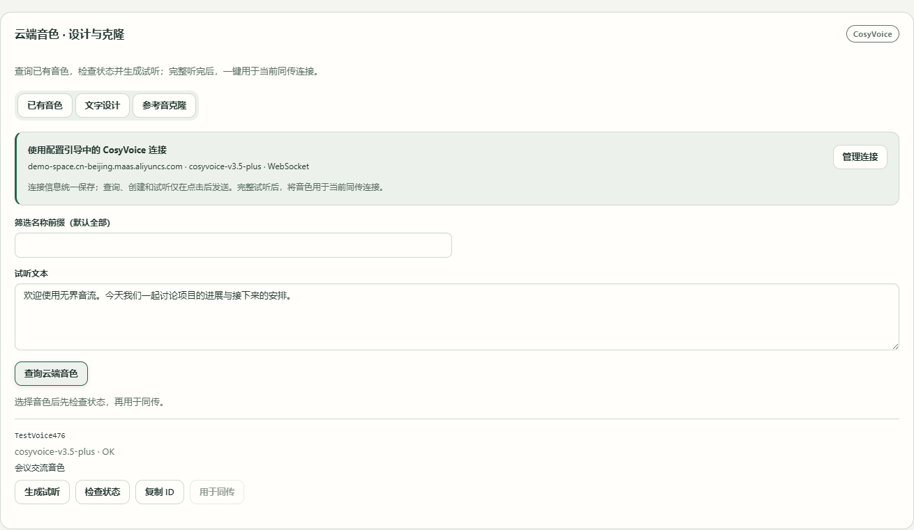
- 1复用配置引导保存的连接；点「管理连接」修改。
- 2默认打开「已有音色」，点击「查询云端音色」才查询。
- 3选择音色，生成并完整试听后，才能点「用于同传」。

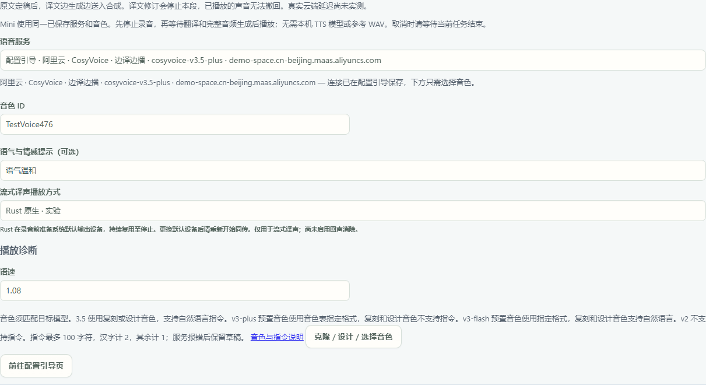
- 1配置引导保存的 CosyVoice 来源继续选中。
- 2只更换为试听确认的账户音色 ID。
- 3从此处再查、克隆或设计音色，不必重新填写连接。
MiniMax 配置一次，再选择译声方式
- 进入配置引导 → API 配置，启用 MiniMax 卡，填写服务地址和 API Key，选择 TTS 模型，完成引导后保存。只打开配置卡不会开始同传，也不会创建音色。
- 回到同传「译声配置 → 语音服务／API」，明确选择「配置引导 · MiniMax · 整段译文」或「配置引导 · MiniMax · 边译边播」，核对显示的模型和主机名。保存的完整接口地址可能只匹配其中一种方式；另一项不可用时，先到引导页修正地址。
- 开始前，先选择或填写账号可用的音色 ID。首次选择 MiniMax 来源时，音色留空，不会替你选默认音色。两种来源共用保存的地址、密钥和模型，分别记住音色、情绪和语速。切换来源会保留另一项的使用参数，旧自定义连接也独立保留。
| 选择的来源 | 译文怎样交给语音合成 |
|---|---|
| 整段译文 · SSE | 每段译文定稿后，一次提交这一段；音频仍可分批到达、分批播放。 |
| 边译边播 · WebSocket Bidi | 支持逐步送入译文并接收音频。需要你明确选择，不会暗中切换协议。 |
两种接口的区别可查看 MiniMax 官方HTTP 语音接口和双向 WebSocket 接口。使用 Mini 时，无论选择哪一项，都先停录，再生成完整音频后播放。
选择已有音色，或克隆、设计新音色
- 在同传音色设置下点击「克隆 / 设计 / 选择音色」，打开 MiniMax 音色面板。面板自动复用当前保存的连接，显示主机和模型，不再要求填写地址、密钥或模型。
- 点击「查询音色」才查询账户。需要新音色时，打开「克隆」或「设计」，按要求提供录音或描述，再点击明确的创建按钮。打开页面不会自动查询、上传、创建或合成。
- 选中音色，点击「合成试听」，完整听完后再点「用于同传」。这里只更换当前来源的音色，保留原协议、情绪和语速。返回同传，检查所选来源和音色 ID。
创建和试听可能计费，参考录音仅在点击克隆操作时上传。取消后需等待当前操作结束，控件才会解锁。若创建结果尚未确认，请保留音色 ID，用原连接恢复本机记录或按 ID 试听，勿重复提交创建。保存的连接被停用、移除或改变后，先到引导页处理，不会自动退回旧自定义连接。
开会前，用自己的账号、目标语言和输出设备做短文本试音。以下受控示例不代表真实云端音质或延迟已验收。

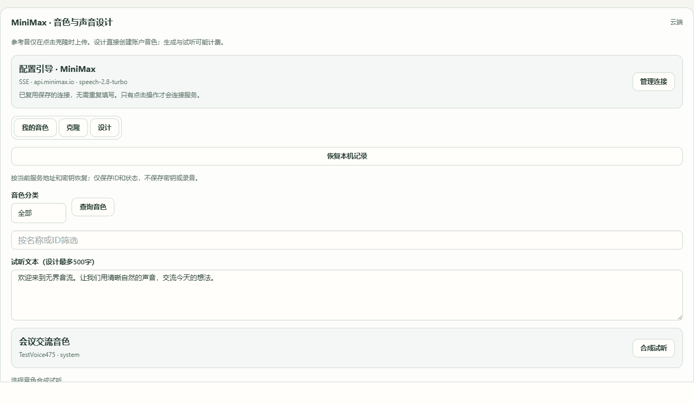
- 1保存的连接提供主机和模型；需要修改时点「管理连接」进入引导页。
- 2点击「查询音色」才查询账户，打开页面不会自动查询。
- 3选择音色后点「合成试听」。图中音色列表为受控示例。

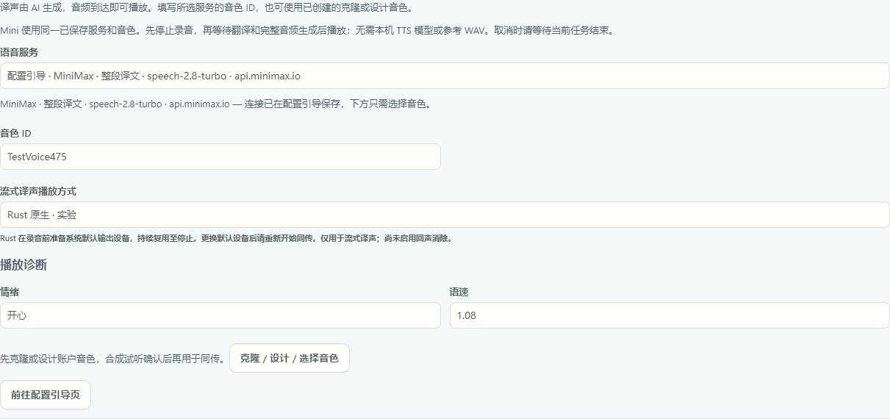
- 1原来的「整段译文」或「边译边播」来源仍被选中。
- 2只更换试听确认的音色；图中音色 ID 为示例。
- 3从此入口查询、克隆、设计或试听，不必重复填写连接。
Mini 也能使用语音 API
「译声配置 → 语音服务／API」的同一选择，同时用于持续按句译声和 Mini。API 路线无需本机 TTS 模型目录或本地参考音，音色使用账号可用的预置音色或已创建的音色 ID。

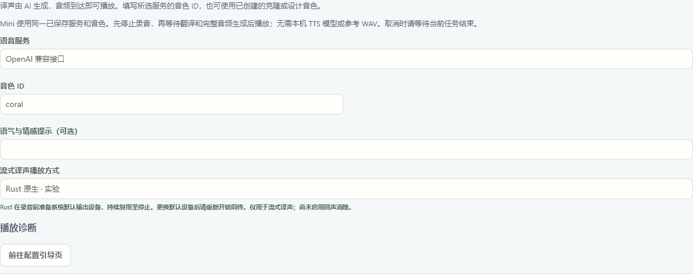
- 1选择已保存的服务连接；地址和密钥在配置引导页管理。
- 2填写账号可用的音色 ID；图中 coral 为示例。
- 3Mini 先录完一段，停录后翻译并生成完整音频；取消时等当前任务收尾，再录下一段。
- 先在配置引导页保存语音服务连接与密钥，再用短文本试音。
- 返回「译声配置」，选择「语音服务／API」及已保存连接，选择音色，按服务支持情况调整表达参数。不必重复填写地址和密钥。
- 打开独立悬浮 Mini，点击开始。看到「录音中」并确认音幅有变化后讲话，再次点击或按 RightAlt 结束本段。
- 等待翻译和语音生成。Mini 会先生成完整 WAV 再播放；即使服务支持流式输出，也要先停止本段录音。
- 要取消时，点工作台「停止」或「退出 Mini」，等待网络请求与文件保存收尾完成，再录下一段。等状态确认任务已结束后，再更改配置。
可选服务包括 OpenAI PCM、MiniMax SSE／WebSocket、CosyVoice、豆包 SSE／WebSocket、ElevenLabs 和 VibeVoice 服务，具体以已保存连接及账号权限为准。Qwen3.1 TTS Next 请在声音工作台使用，Mini 此处尚未接入该适配。
旧配置若同时启用多条译声来源，请先选择一项。连接、音色或表达参数无效时会明确报错，不会悄悄改用本机模型。译文会发送给所选语音服务；如果识别也选了 API，录音会发送给对应识别服务。Mini 和持续同传均不加入语音水印。实际音质与等待时间请用自己的账号、语言和设备短试。
使用配置引导保存的 OpenAI TTS
- 在「配置引导 → API 配置」启用 OpenAI，填写 Base URL 和 API Key，选择 TTS 模型
tts-1、tts-1-hd、gpt-4o-mini-tts或gpt-4o-mini-tts-2025-12-15，完成引导以保存。 - 回到同传「译声配置 → 语音服务／API」，明确选择名称以「配置引导 · OpenAI TTS」开头、并带模型与主机名的连接。只需填写本次音色 ID，默认是
alloy，不用再次输入地址、密钥和模型。 tts-1与tts-1-hd不支持语气指令，请清空「语气与情感提示」；需要该提示时，换用支持指令的模型。此入口语速固定为1，没有独立情绪标签。
启用 OpenAI 配置卡不会自动开启同传，仍需在工作台选择连接并手动开始。原有自定义连接独立保留，可按需选择。所选配置引导连接被禁用或移除后，开始操作会明确报错，不会自动切换其他连接或本机模型。
译文会发送到所选服务，云端请求可能计费。请先用短文本试音；真实账号的音质和延迟尚未验收。

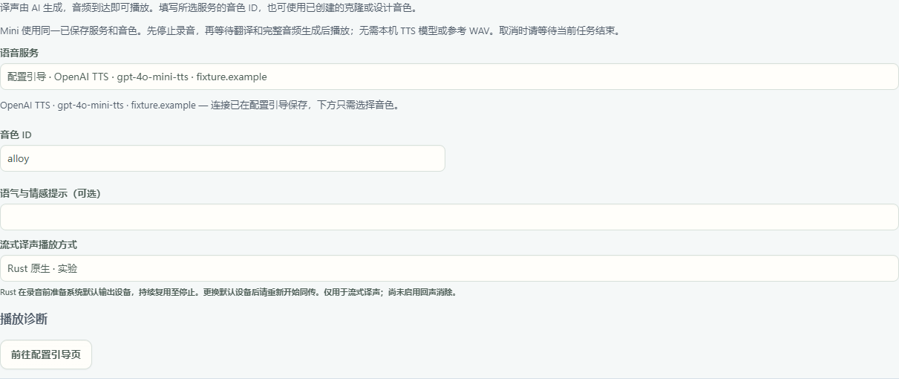
- 1明确选择「配置引导 · OpenAI TTS」连接，核对显示的模型和主机名。
- 2填写此连接使用的音色 ID，图中为默认的 alloy。
- 3Mini 使用同一连接；先停录，再等待完整音频生成后播放。
从点击开始等待启动确认，到录音、停录收尾、翻译、完整音频生成和播放，Mini 会锁定服务、音色、语言及配置选择。点「停止」后仍需等待结束确认；取消尚未确认或失败时，配置继续锁定，可再点「停止」重试。确认任务已结束后，才能更改配置或录下一段。期间仍可停止录音、生成或播放，也可折叠卡片、查看内容。

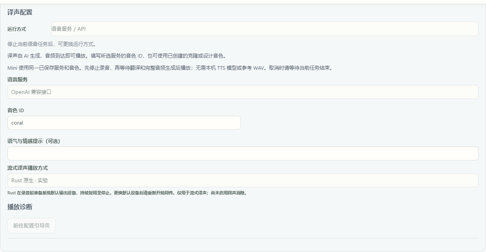
- 1Mini 任务尚未结束，运行方式保持锁定。
- 2提示先停止当前任务。点停止后还要等待结束确认；取消未确认或失败时，可再点停止重试。
- 3保留当前音色 ID，确认任务结束前不能修改。
用 Mini 确认开始、停止和处理状态
点击悬浮 Mini 的“点击开始”开始录音。显示“启动中”时先等待；看到“录音中”后讲话，波条会随输入声音的强弱变化。再次点击或按 RightAlt 结束本段，先显示停止等待，再进入翻译、生成和播放。处理中不要重复开始。若出现失败或未收到确认，查看按钮提示中的原因，处理后再试；不能仅凭按钮被点过认定录音已经开始。Mini 录完一段才处理，持续边讲边播报请使用工作台的“持续同传”。
停止后，等记录保存完成
点击「停止同传」会立即停止译声播放，录音收尾和记录保存仍可能继续。看到「正在保存同传记录」时，请先等待；播放停止不表示记录已经保存。
若显示「同传记录尚未保存」，先检查保存位置的可用空间和写入权限，再点「重试保存」。未保存期间，软件会暂缓开始新任务、重启软件和恢复其他草稿，先完成本轮保存再继续。
需要离开窗口时，可在退出提示中选择「仅关闭界面 · 后台继续」，让当前软件继续运行。电脑需要保持开机；保存完成前，请不要退出软件、重启或关机。关闭同传面板只会隐藏该面板，正在运行的同传也可能继续。
如果决定放弃尚未保存的部分，请明确选择丢弃本轮草稿并确认。隐藏界面不会丢弃草稿。尚未保存的内容只保留在当前运行的软件中，不要依赖重启后恢复。

- 1未保存的同传记录保留在当前运行的软件中。
- 2恢复磁盘可用后，点击重试保存。
怎么知道成功
短讲话得到对应译文和译声；停止后不再产生新声音；统计保留真实有效样本。是否足够实时须结合连续会话的积压、音质和设备测量判断。
遇到问题
同传记录还没保存
若显示「同传记录尚未保存」，先检查保存位置的可用空间和写入权限，再点「重试保存」。未保存期间，软件会暂缓开始新任务、重启软件和恢复其他草稿，先完成本轮保存再继续。 需要离开窗口时，可在退出提示中选择「仅关闭界面 · 后台继续」，让当前软件继续运行。电脑需要保持开机；保存完成前，请不要退出软件、重启或关机。关闭同传面板只会隐藏该面板，正在运行的同传也可能继续。
Mini 点停止后仍在等待
请等待当前处理收尾，再开始下一段录音。等待中不要反复打开 Mini 或启动其他任务。若提示停止未确认，点「停止」重试；想退出时，点「退出 Mini」重试。确认停止完成后再继续。
只有译文，没有声音
先停止当前任务并等待收尾。使用「语音服务／API」时，核对所选保存连接、账号权限和音色 ID，再用短文本试音。服务不接受参数或返回无效音频时按提示处理，不会自动改用本机模型。使用本机译声时，先点击顶部「停止同传」。确认「译声配置」选中已试音成功的运行方式与登记模型；Index准备后选择模型库中的 Native 条目，不再复制路径。参考音与原文也要对应。回声音面板生成一句目标语言短文本：没有音频时按状态处理模型、组件或参考音；有音频但回听无声时检查默认输出、耳机、静音和音量。短试音听到后，用相同选择重新开始持续同传。工作台自动播放，没有单独的自动播报开关。Mini是停止后处理的独立流程，不是持续同传。
准备卡住／没有首音
先点击「停止同传」，看状态区提示属于模型、参考音、输出设备还是服务。按本页最后一步分别做短试音与输出检查。当前工作台自动播放；缺失首音计时显示「—」，表示尚无计时结果，不能据此判断延迟为零或没有生成音频。
译声越来越落后
查看积压并使用界面已有的追赶操作；减少额外语言，选择更快且试音通过的组合。跳过播报不删除原文或译文。
不断转录软件自己的译声
改用耳机并检查输入设备，不把系统播放回录当作新讲话。完整长会话回声处理仍需实际验证。
FireRed 流式配置无法开始
当前 Windows 包的 FireRed 请选择 CPU，并检查已登记模型和应用配套组件是否完整；当前工作台自动播放，未提供单独的自动播报开关。先点击「停止同传」，按组件或参考音的具体提示处理并完成短试音，再开始；不要以更改模型名或遗漏组件绕过提示。
接下来

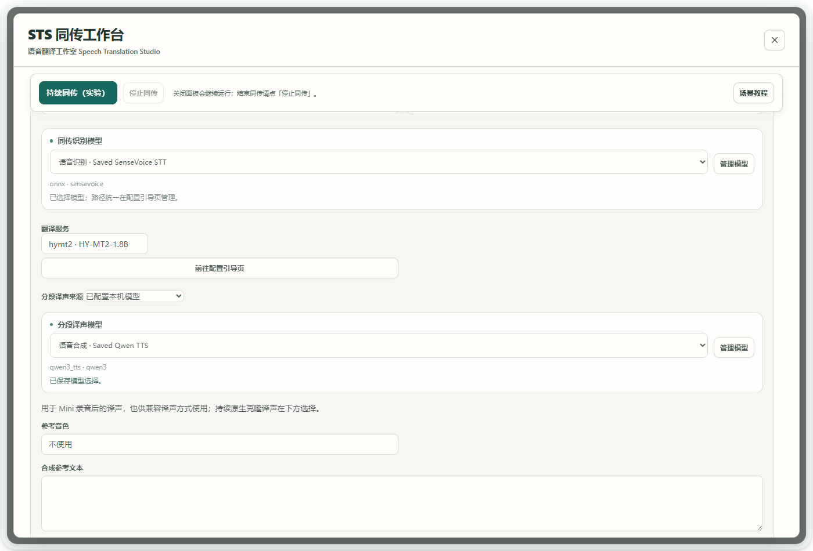
配置一次，在各工作台直接选择
在配置引导页登记本地模型，填写容易认出的名称，并在规格中注明大小或量化。不同规格分别登记；VoxCPM 的 Runtime 目录随模型一起保存。
使用页面显示模型的用途、名称和已登记规格。旧配置若只叫 ONNX 这类后端名，会显示目录名帮助区分；显示名称不代表文件或能力已验证，先检查模型，再做短样本试用。
同传的「语音识别模型」负责把输入变为文字。本机译声时，「分段译声模型」用于 Mini 录音结束后的合成，「持续克隆译声模型」结合参考录音为译文分段发声；选「语音服务／API」时，两种方式共用同一保存连接和音色。按本次使用方式选择即可；「管理模型」进入配置引导页，不需要在工作台重复填写路径。
支持的连续参数可以转动表盘，或聚焦后用方向键调整，也可以直接输入数字。运行时不可调整的控件会变暗，不能修改正在使用的模型。